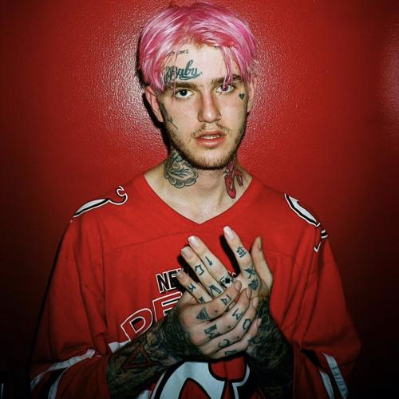
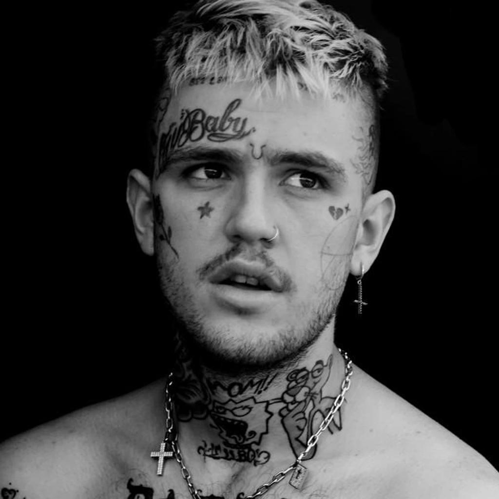
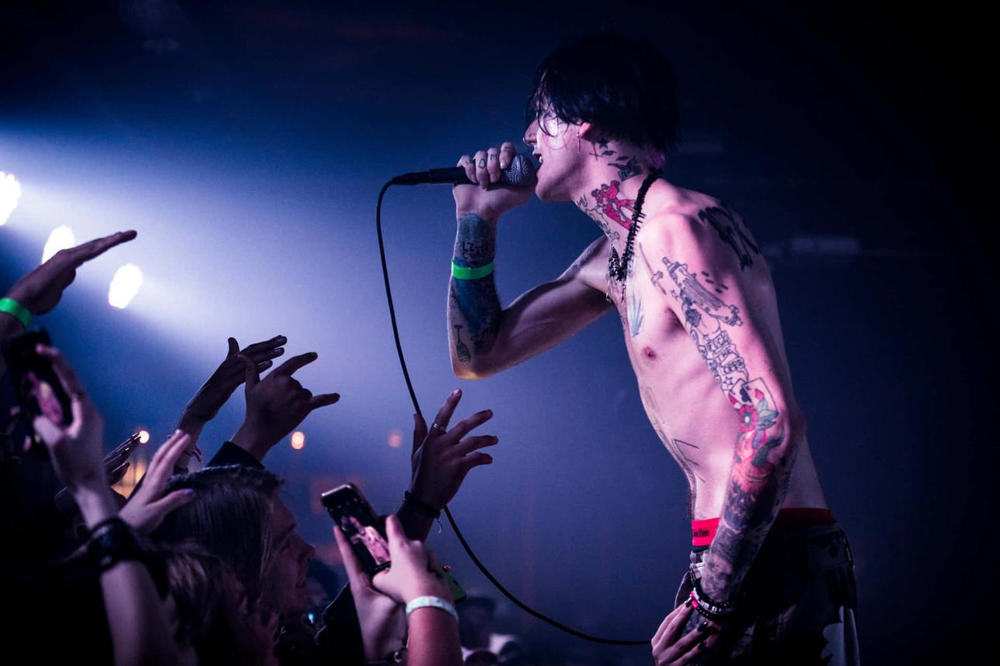
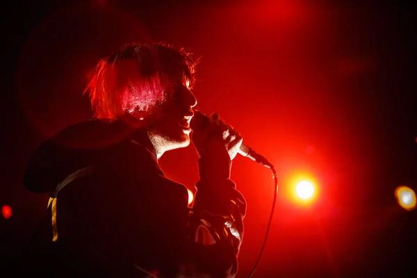
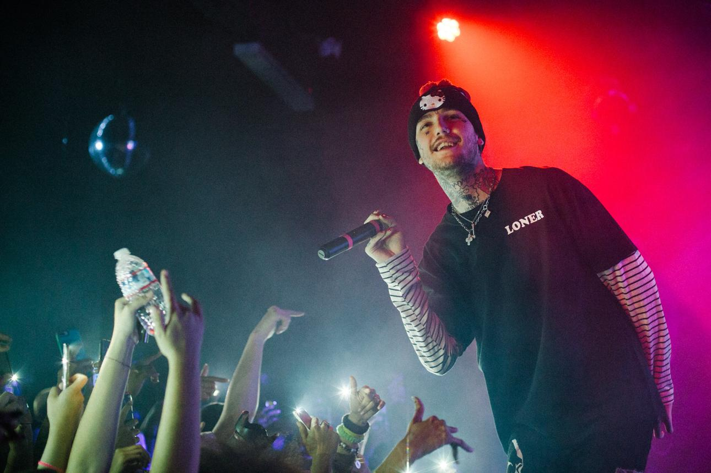

Ніч знову мовчить, а я не можу заснути,
Твоє ім’я в голові, його ніяк не забути.
Місто давно спить, але не спить моя душа,
Бо без тебе кожен день — ще одна порожнеча.
Я шукаю тебе між тисячами людей,
Та знаходжу лише спогади минулих ночей.
Ти була моїм світлом, тепер лише тінь,
Я ховаю свій біль під холодний дим.
Кажуть: «Час лікує», але це просто слова,
Бо щоночі в моїй голові тільки ти одна.
Я б віддав усе, щоб ще раз тебе обійняти,
Хоч на хвилину перестати тебе втрачати.
Будь поруч… хоча б ще одну ніч,
Без тебе моє серце вже майже не кричить.
Я хотів забути, але знову впав,
У твої очі, у яких себе назавжди залишав.
Не йди… навіть якщо вже пізно,
Без тебе кожен ранок стає занадто сірим.
Ти мій спокій і моя найбільша війна,
Я гублю себе щоразу, коли нема тебе.
Ти світилась тихо, наче місяць у дощі,
А тепер лишилась тільки тиша у душі.
Я усміхаюсь людям, але це лише роль,
Бо всередині мене давно живе цей біль.
Мої сни ще пам’ятають тепло твоїх рук,
Та прокидаюсь знов — і навколо лише звук
Дощу по вікнах і холодних ліхтарів,
Я так багато сказати тобі не встиг.
Якщо колись почуєш ці рядки вночі,
Знай — я досі бережу тебе в душі.
Навіть якщо дороги давно розійшлись,
Ти назавжди залишишся частиною моїх думок.
Будь поруч… хоча б ще одну ніч,
Без тебе моє серце вже майже не кричить.
Я хотів забути, але знову впав,
У твої очі, у яких себе назавжди залишав.
Не йди… навіть якщо вже пізно,
Без тебе кожен ранок стає занадто сірим.
Ти мій спокій і моя найбільша війна,
Я гублю себе щоразу, коли нема тебе.

Lil Peep у червоній хокейній кофті на червоному фоні. Один із найвпізнаваніших образів артиста.

Чорно-білий портрет Ліл Піпа, видно татуювання й обличчя

Lil Peep виступає на сцені перед фанатами, які простягають до нього руки. Фото передає атмосферу живого концерту

Живий виступ, артист тримає мікрофон, а червоне світло створює атмосферу концерту

Lil Peep усміхається під час живого виступу, тримаючи мікрофон у руці. Фанати простягають до нього руки, а червоне освітлення створює атмосферу концерту.